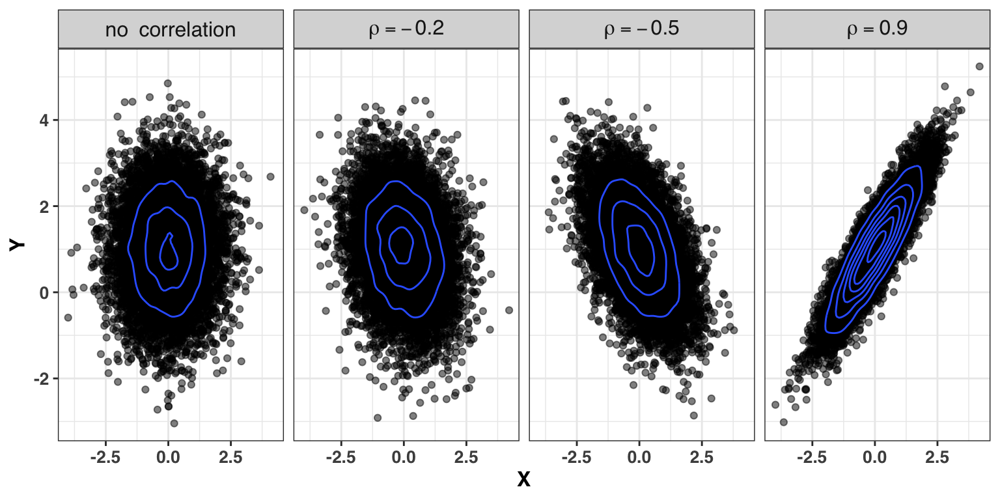

In this lecture, multivariate random variables are considered.
Let \(X\sim F_X (x)\) and \(Y\sim F_Y (y)\) be two random variables the values of which can be observed in a random experiment. The joint probability distribution function (joint c.d.f.)of \(X\) and \(Y\) is defined as
\[ F_{X,Y}(x,y) = \text{P}\left(X\leq x, Y\leq y\right). \]
\(X\) and \(Y\) are independent random variables if
\[ F_{X,Y}(x,y) = \text{P}(X \leq x, Y \leq y) = \text{P}(X \leq x)\cdot\text{P}(Y\leq y) = F_{X}(x)\cdot F_{Y}(y). \]
In a case of discrete random variables, a joint probability mass function (joint p.m.f.) is used:
\[ p_{X, Y}(x,y) = \text{P}(X = x, Y = y) \]
Marginal pmf’s are defined as
\[ \begin{aligned} p_X(x) &= \sum\limits_{y_k}p(x, y_k) \\ p_Y(y) &= \sum\limits_{x_j}p(x_j, y) \end{aligned} \]
If \(X\) and \(Y\) are independent random variables, then
\[ p_{X,Y}(x,y) = \text{P}(X = x, Y = y) = \text{P}(X = x)\cdot\text{P}(Y = y) = p_X(x)\cdot p_Y(y). \]
Example (Clinical trial)
In a clinical trial, two types of adverse events (AEs) can be observed: \(X\) and \(Y\):
The joint distribution of \((X,Y)\) is given as follows:
| X/Y | 0 | 1 | 2 | 3 |
|---|---|---|---|---|
| 0 | 0.84 | 0.030 | 0.020 | 0.010 |
| 1 | 0.06 | 0.010 | 0.008 | 0.002 |
| 2 | 0.01 | 0.005 | 0.004 | 0.001 |
What are the probabilities of
Solution:
\[ \begin{aligned} A &= \text{"no AEs in the trial"} \Leftrightarrow (X = 0, Y = 0) \Rightarrow \\ &\Rightarrow \text{P}(A) = \text{P}(X = 0, Y = 0) = p_{X,Y}(0,0)= 0.84 \\ B &= \text{"exact one AE in the trial"} \Leftrightarrow (X=1,Y = 0)\text{ or }(X = 0, Y = 1) \Rightarrow \\ &\Rightarrow \text{P}(B) = \text{P}\left((X=1,Y=0) + (X=0,Y=1)\right) = p_{X,Y}(1,0) + p_{X,Y}(0,1) = 0.06 + 0.03 = 0.09 \end{aligned} \]
Example
Two random variable \(X\) and \(Y\) have the joint pmf \(p_{X, Y}(x, y) = \text{P}(X = x, Y = y)\), which is represented by the following table:
| X/Y | 0 | 1 | 2 | 3 |
|---|---|---|---|---|
| 0 | 0.06 | 0.18 | 0.24 | 0.12 |
| 1 | 0.04 | 0.12 | 0.16 | 0.08 |
What is the value of \(\text{P}(Y > 1)\)?
Solution:
\[ \begin{aligned} \text{P}(Y > 1) &= \text{P}\left((Y=2) + (Y=3)\right) = \\ &= \text{P}(Y = 2) + \text{P}(Y = 3) = \\ &= \underbrace{p_{X, Y}(0,2) + p_{X, Y}(1,2)}_{\text{P}(Y = 2)} + \underbrace{p_{X, Y}(0,3) + p_{X, Y}(1,3)}_{\text{P}(Y = 3)} = \\ &= (0.24 + 0.16) + (0.12 + 0.08) = 0.6 \end{aligned} \]
In a case of continuous random variables, a joint probability density function (joint p.d.f.) \(f_{X, Y}(x,y)\) is used, for which:
\[ F_{X,Y}(x,y)=\int\limits_{-\infty}^x\int\limits_{-\infty}^yf_{X, Y}(u, v)dudv \]
Marginal pdf’s are defined as
\[ \begin{aligned} f_X(x) &= \int\limits_{-\infty}^{+\infty}f_{X,Y}(x,y)dy \\ f_Y(y) &= \int\limits_{-\infty}^{+\infty}f_{X,Y}(x,y)dx \end{aligned} \]
If \(X\) and \(Y\) are independent random variables, then
\[ f_{X,Y}(x,y) = f_X(x)\cdot f_Y(y). \]
Example (Two time-to-event oucomes)
Two electronic components of some device work in harmony for the success of the total system. Let \(X\) and \(Y\) denote the life-time (in hours) of a corresponding component. The joint p.d.f. of \(X\) and \(Y\) is given by
\[ f_{X,Y}(x,y) = \left\{ \begin{array}{cl} ye^{-y(1+x)}, & x\geq 0, y\geq 0 \\ 0, & \text{otherwise} \end{array} \right. \]
Solution
\[ \begin{aligned} f_X(x) &= \int\limits_{-\infty}^{+\infty}f_{X, Y}(x, y)dy = \int\limits_{0}^{+\infty}ye^{-y(1+x)}dy = \frac{1}{(1+x)^2} \\ f_y(y) &= \int\limits_{-\infty}^{+\infty}f_{X, Y}(x, y)dx = \int\limits_{0}^{+\infty}ye^{-y(1+x)}dy = e^{-y} \end{aligned} \]
# marginal pdf for X
fx <- function(x) 1/(1+x)^2
# marginal pdf for Y
fy <- function(y) exp(-y)
# joint pdf for (X, Y)
fxy <- function(x, y) y*exp(-y*(1 + x))
# probability P(X > 2, Y > 2)
# Integrals
Ifx <- integrate(fx, 0, 2)$value
Ify <- integrate(fy, 0, 2)$value
Ifxy <- integrate(
function(x) map_dbl(x, ~ integrate(function(y) fxy(.x, y), 0, 2)$value),
0, 2)$value
cat(str_glue("The answer is {prob}", prob = 1- (Ifx + Ify - Ifxy)))
The answer is 0.000826250725555422Conditional p.m.f. (of \(X\))
\[ \text{P}(X = x_j|Y = y_k) = \frac{\text{P}(X = x_j,Y = y_k )}{\text{P}(Y=y_k)} = \frac{p_{X,Y}(x_j, y_k)}{p_Y(y_k)} = p_{X|Y}(x_j|y_k) \]
Conditional p.d.f. (of \(X\))
\[ f_{X|Y}(x|y) = \frac{f(x,y)}{f(y)}\quad(f(y) > 0) \]
Conditional c.d.f. (of \(X\))
\[ F_{X|Y}(x|y) = \int\limits_{-\infty}^xf_{X|Y}(u|y)du \Rightarrow \text{P}(X \leq x) = F_X(x) = \int\limits_{-\infty}^{+\infty}F_{X|Y}(x|y)f_Y(y)dy \]
Assume that, for a random experiment, it is known that \(B\) is true.
The conditional distribution of \(Y\), given \(B\), is defined as
\[ F_{Y|B} = \text{P}(Y\leq y|B). \]
p.d.f. of this distribution, by the Bayes’ formula is
\[ f_{Y|B}(y) = cP(B|Y=y)f_Y(y), \] where
\[ \frac{1}{c}=\text{P}(B)\text{ and }\text{P}(B) = \int\limits_{-\infty}^{+\infty}P(B|Y=y) f_Y(y)dy \] Here,
\[ L(y) = \text{P}(B|Y=y) \]
could be called likelihood.
In probability theory and statistics, both covariance and correlation describe the degree to which two random variables or sets of random variables tend to deviate from their expected values in similar ways.
If \(X\) and \(Y\) are two random variables, with means (expected values) \(\mu_X\) and \(\mu_Y\) and standard deviations \(\sigma_X\) and \(\sigma_Y\), respectively, then their covariance and correlation are as follows:
\[ \text{cov}\left[X, Y\right] =\sigma_{XY} = \text{E}\left[(X-\mu_X)(Y-\mu_Y)\right]; \]
\[ \text{corr}\left[X, Y\right] = \rho_{XY} = \frac{\text{E}\left[(X-\mu_X)(Y-\mu_Y)\right]}{\sigma_X\sigma_Y} = \frac{\text{cov}\left[X, Y\right]}{\sigma_X\sigma_Y} \]
Correlation is dimensionless while covariance is in units obtained by multiplying the units of the two variables.
If \(Y\) always takes on the same values as \(X\), we have the covariance of a variable with itself (i.e. \(\sigma_{XX}\)), which is the variance, \(\sigma^2_X\).
The correlation of a variable with itself is always 1. More generally, the correlation between two variables is 1 (or –1) if one of them always takes on a value that is given exactly by a linear function of the other with respectively a positive (or negative) slope.
The covariance shows if there exists a relationship between two random variables \(X\) and \(Y\).
The correlation allows to understand how strong is this relationship.

Figure 1: Bivariate normal distribution